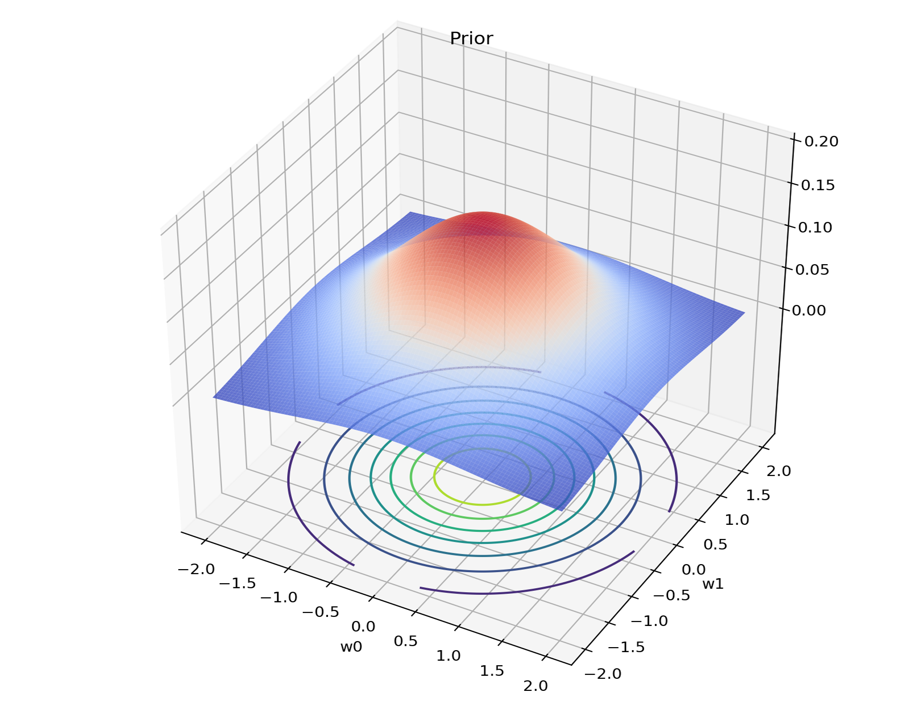
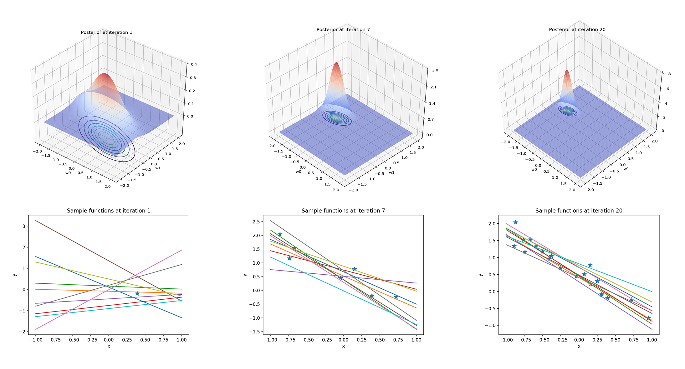

然后见识到了很多特定的分布后，我们就有足够的工具来从数据中学习简单模型了，那最简单的机器学习模型之一就是线性回归。而且感觉线性回归是后面很多模型的爸爸，万变不离其宗。搞清楚线性回归，就有了孙悟空的火眼金睛，什么妖孽都不怕。说到孙悟空，就想到今年中美合作……文体两开花……多多支持……
目的
手上有数据 $D=((x_1,y_1),\ldots,(x_n,y_n)),其中 x_i\in \mathbb{R}^d, y_i\in \mathbb{R}$
然后我们需要获取一个 $d$ 维到 1 维的映射 $f:\mathbb{R}^d\rightarrow \mathbb{R}$，能够根据新的 $x$ 预测出 $y$
基函数 Basis Function
线性回归说是线性，其实回归出来不一定是线形，这就是基函数的作用
一个基本的线形函数模型是
$$f(x)=w^Tx=\sum\limits_{i=1}^{d}w_ix(i)$$
其中 $x,w\in\mathbb{R}^d,y\in\mathbb{R}$
而如果把其中的 $x$ 用基函数 $\phi(x)$ 代替，就变成了
$$f(x)=w^T\phi(x)=\sum\limits_{i=1}^{d}w_i\phi_i(x)$$
其中$w\in \mathbb{R}^m$，而 $\phi$ 是一个 $d$ 维到 $m$ 维的映射 $\phi:\mathbb{R}^d\rightarrow\mathbb{R}^m$，也即 $\phi(x)=(\phi_1(x),\ldots,\phi_m(x))$
可以看到，对于 $f$ 和 $\phi$，它们之间的映射的确是线性的，也就是 $w$ 是线性的，这也就是线性回归得名的原因，而 $\phi$ 本身，完全可以是非线性的。使用基函数，就可以表征更广泛的映射关系，比如傅立叶变换、小波分析等，就是以波形函数作为基函数的例子
定义模型似然
这一步也就是要考虑，给定一个模型，可能的输出是什么。
首先定义线性回归模型 $t=w^T\phi(x)+\epsilon$，其中我们假设 $\epsilon \sim \mathcal{N}(0,\beta^{-1}l)$，把模型变一下形式
$$\epsilon = t-w^T\phi(x) \sim \mathcal{N}(\epsilon|0,\beta^{-1}l)$$
然后把高斯分布展开，就可以写成
$$\mathcal{N}(t-w^T\phi(x)|0,\beta^{-1}l) = (\frac{\beta}{2\pi})^{\frac{1}{2}}e^{-\frac{1}{2}(t-w^T\phi(x))\beta(t-w^T\phi(x))} = \mathcal{N}(t|w^T\phi(x),\beta^{-1}l)$$
那单个点的似然就可以表征为噪声
$$p(t|x,w,\beta)=\mathcal{N}(t|w^T\phi(x),\beta^{-1})$$
在这个模型中，似然其实是一种噪声的量化，观察值和实际值的误差越小，似然就越大。这里可以用最大似然估计 MLE 来求解。我们假设点的观测都是独立的，那么整个模型的似然就可以用单点似然的乘积来计算
\begin{align}
p(t|X,w,\beta)&=\prod\limits^N_{n=1}\mathcal{N}(t|w^T\phi(x_n),\beta^{-1})\\
&=\prod\limits^N_{n=1}\frac{1}{(2\pi\beta^{-1})^{\frac{1}{2}}}e^{-\frac{1}{2}\beta(t_n-w^T\phi(x_n))^2}\\
&=(\frac{\beta}{2\pi})^{\frac{N}{2}}e^{-\frac{\beta}{2}\sum^N_{n=1}(t_n-w^T\phi(x_n))^2}
\end{align}
然后两边取对数就获得了
$$\log p(t|X,w,\beta)=\frac{N}{2}(\log \beta-\log 2\pi)-\beta \frac{1}{2}\sum\limits^{N}_{n=1}(t_n-w^T\phi(x_n))^2$$
这个式子有两项，第一项是个常数，所以不用管他，第二项就是需要关心的误差，两边取梯度获得
$$\nabla \log p(t|X,w,\beta)=\beta \sum\limits^{N}_{n=1}(t_n-w^T\phi(x_n))\phi(x_n)^T$$
求梯度为 0 的驻点
$$0 = \sum\limits^N_{n=1}t_n\phi(x_n)^T-w^T(\sum^N_{n=1}\phi(x_n)\phi(x_n)^T)$$
解出 $w_{MLE}=(\phi(X)^T\phi(X))^{-1}\phi(X)^Tt$ 以及精度 $\frac{1}{\beta_{MLE}}=\frac{1}{N}\sum\limits^N_{n=1}(t_n-w^T_{MLE}\phi(x_n))^2$
假设模型先验
这一步中要考虑的是，哪些模型比较可能会出现，也就是获取先验，先验就代表了我们对于模型的认知。
既然我们的似然已经是 $w$ 的高斯分布了，自然而然会想到使用高斯分布的共轭先验，让后验也具有高斯分布的性质便于计算，所以假设先验也为高斯分布
$$p(w)=\mathcal{N}(w|m_0,S_0)$$
计算模型后验
这一步就是根据新的观测，更新我们的认知，也就是获取后验。
我们已经获得了似然
$$p(t|X,w,\beta)\propto \exp(-\frac{1}{2}\beta(t-w^T\phi(X))^T(t-w^T\phi(X)))$$
又假设了高斯的共轭先验
$$p(w)=\mathcal{N}(w|m_0,S_0)\propto \exp(-\frac{1}{2S_0}(w-m_0)^T(w-m_0))$$
根据高斯相似性质，可以知道后验也将是一个高斯分布，不妨假设为 $\mathcal{N}(m_N,S_N)$，根据贝叶斯公式，可以计算后验
$$p(w|X,t) \sim \mathcal{N}(m_N,S_N) \propto p(t|X,w,\beta)p(w)$$
展开右侧似然和先验的高斯分布，得到
$$p(w|X,t)\propto \exp(\beta(t^Tt-2w^T\phi(X)t+\phi(X)^Tww^T\phi(X))+\frac{1}{S_0}(w^Tw-2w^Tm_0+m_0^Tm_0))$$
依据 $w$ 的次数分组，可以得到
$$p(w|X,t) \propto \exp((\beta t^Tt+\frac{1}{S_0}m_0^Tm_0)-2w^T(\beta\phi(X)t+\frac{1}{S_0}m_0)+w^T(\beta\phi(X)\phi(X)^T+\frac{1}{S_0})w)$$
而由于后验是高斯分布 $p(w|X,t) \sim \mathcal{N}(m_N,S_N)$，因此展开式的 $e$ 指数项一定包含
$$(w-m_N)^TS_N(w-m_N)=const-2w^TS_Nm_N+w^TS_N^{-1}w$$
因此比较两个式子，就可以填充后验的高斯分布参数
\begin{align}
S_N&=(\beta\phi(X)^T\phi(X)+\frac{1}{S_0})^{-1}\\
m_N&=(\beta\phi(X)^T\phi(X)+\frac{1}{S_0})^{-1}(\beta\phi(X)^Tt+\frac{1}{S_0}m_0)
\end{align}
预测分布
获取了模型后，就可以根据我们对于模型的认识，预测模型结果了
$$p(t’|t,x’,X,\alpha,\beta)=\int p(t’|x’,w,\beta)p(w|t,X,\alpha,\beta)dw$$
其中 $t’$ 是 $x’$ 处的输出，$x’$ 是我们的输入目标点，$w$ 是权重，和 $x$ 相乘后给出输出值 $\alpha$ $\beta$ 是先验和似然的参数，$X,t$ 是训练用的输入输出数据对。
可以看到，式子中我们把 $w$ 边缘化了，对它就积分就能把它消掉。这样他就不会出现在最后的式子中，因为其实我们并不关心 $w$ 具体是多少，我们只关心在 $x’$ 处能否输出正确的值 $t’$
一个具体的应用实例
那么现在就在具体的模型中实践线性回归，使用最简单的线性模型，模型设置如下
\begin{align}
y_i &= w_0x_i+w_1+\epsilon\\
x &= [-1,-0.99,\ldots,0.99,1]\\
\epsilon &= \mathcal{N}(0,0.3)\\
W &= [-1.3,0.5]
\end{align}
首先基于以上信息，生成观察数据集 $D=((x_0,y_0),\ldots,(x_{100},y_{100}))$，这个数据集中的 $y$ 在生成的时候会与真实值有 $\epsilon$ 的误差，那我们的目的就是从观察数据集中能够学习出尽可能和真实值 $W$ 接近的后验 $W_N$。
为了让后验能够出现比较熟悉的高斯分布，以及考虑到尽可能简化模型，我们假设共轭先验为标准二维高斯分布 $\mathcal{N}(W|(0,0),I)$。以两个线性参数 $w_0$ 和 $w_1$ 为底面坐标轴，可能共现的概率为纵轴，三维空间的高斯先验就长这样，底面的圈圈是等高线图

然后我们获取后验的方法就是，依据先验的高斯分布进行参数 $W$ 的采样，采样结果是一组先验参数 $W_0=(w_0,w_1)$，然后就可以使用线性回归计算出后验。后验也是一个高斯分布，$p(W|X,Y)\sim \mathcal{N}(W|m_N,S_N)$，其中
\begin{align}
Y &= W^TX\\
S_N&=(X^TX+I)^{-1}\\
m_N&=(X^YX+I)^{-1}(X^TY+W_0)
\end{align}
获取了后验之后，我们就更新了自己对于模型的认知，也就是说，$W$ 的分布基于后验参数发生了变化，但是由于高斯相似性，新的后验分布还是一个二维高斯分布。
那么其实之后的步骤就呼之欲出了，我们从先验采样一个点，根据线性回归得出了后验，这是第一次迭代；那现在我们第一次迭代的后验就成为了我们第二次迭代的先验，再次从这次的先验采样一个点，根据线性回归得出新的后验，这样循环往复，就逐渐逼近了真实的 $W$ 值。
为了直观感受这一逐渐趋向真实值的过程，我们进行多次迭代。每次得出后验后，先画出后验高斯分布的形状，都在在后验参数分布上多次进行 $W$ 的采样，采样的结果是多组 $W_N$ 的值，根据这些采样的参数作出相应的直线 $y_N=W_N^TX$。这样获得的结果就是下面这样

可以看到，每次获得新的后验分布还是一个二维高斯分布，只不过形状发生了改变。直观地看，“山峰”变高了，而“山底”变窄了。这里的“山峰”指的就是整个分布中最可能出现的一组 $(w_0,w_1)$ 出现的概率，而“山底”代表了我们置信度的边缘，因为只有出现在“山上”的参数组，才是我们认为可能为真的参数组，因此在“平原”上的坐标都是我们不关心的，因为这些地方都是方差过大的地方，我们认为这些地方的概率太低了。因此，在不断获得新的后验的过程中，我们对于某一区域存在真实值这一事件更确定了，而这个存在真实值的区域的范围正被我们不断缩小。并且可以从图中看出，山峰的位置逐渐趋于真实值 $W=[-1.3,0.5]$
这从采样直线的样子也可以看出，随着迭代次数的增加，采样出的直线 $y_N=W_N^TX$ 的斜率也逐渐趋同，或者说逐渐趋于真实值 $W=[-1.3,0.5]$